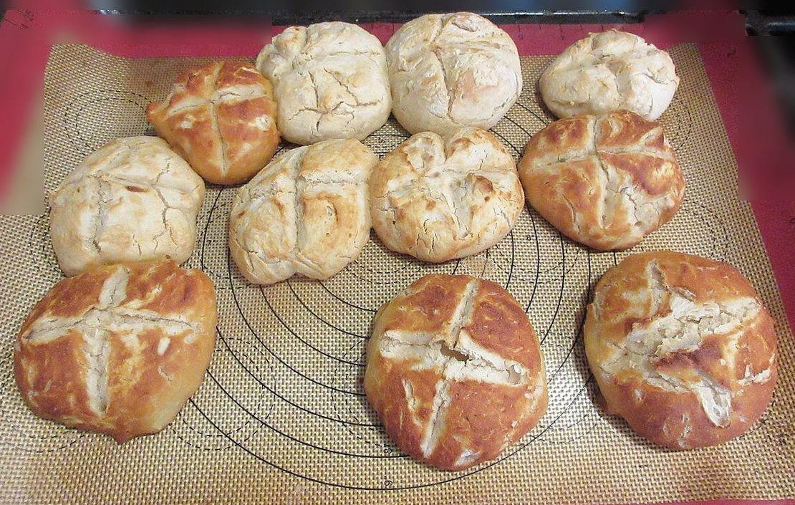
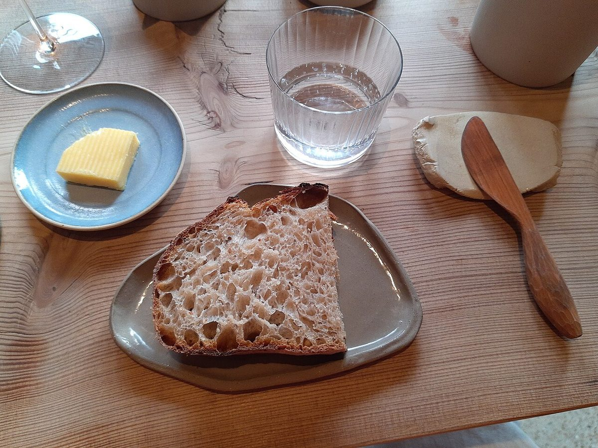
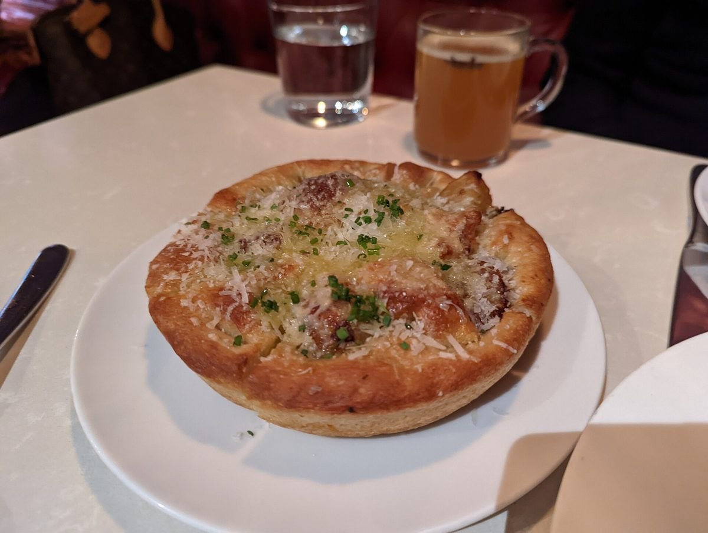

GOODS / 品目
品目・価格
メニュー・価格は準備中です。確認でき次第、こちらに掲載します。
申告品目リスト
| 品目 | 準備中 |
|---|---|
| 価格 | 準備中 |
| ご予約 | 準備中 |
イメージ写真
パンのある風景(イメージ)
以下は国外・撮影地不明のフリー素材です。お店の商品ではなく、実際の品揃えを示すものでもありません。





GOODS / 品目
メニュー・価格は準備中です。確認でき次第、こちらに掲載します。
| 品目 | 準備中 |
|---|---|
| 価格 | 準備中 |
| ご予約 | 準備中 |
イメージ写真
以下は国外・撮影地不明のフリー素材です。お店の商品ではなく、実際の品揃えを示すものでもありません。


